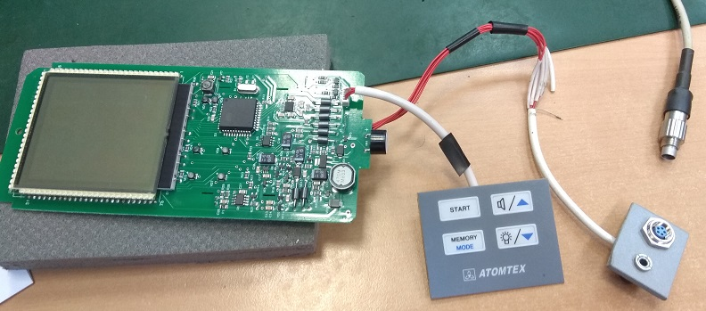
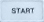
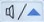

Главная
БОИ-2 Прошивка
БОИ-2 Прошивка
Подключить клавиатуру

Зажать клавиши  и 
Удерживая клавиши подсоединить к ПК
При появлении звука сигнала отпустить клавишу
Шить с помощью
Flip
Отсоединить разъем от ПК, отпустить кнопку